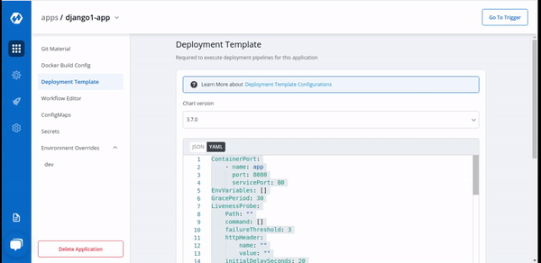

Deployment Template
Deployment configuration is the Manifest for the application, it defines the runtime behavior of the application. You can define application behavior by providing information in three sections:
-
Chart Version
-
Yaml file
-
Show application metrics

1. Chart version
| Key | Descriptions |
|---|---|
Chart Version |
Select the Chart Version using which you want to deploy the application. |
Devtron uses helm charts for the deployments. And we are having multiple chart versions based on features it is supporting with every chart version.
One can see multiple chart version options available in the drop-down. you can select any chart version as per your requirements. By default, the latest version of the helm chart is selected in the chart version option.
Every chart version has its own YAML file. Helm charts are used to provide specifications for your application. To make it easy to use, we have created templates for the YAML file and have added some variables inside the YAML. You can provide or change the values of these variables as per your requirement.
If you want to see Application Metrics (For example Status codes 2xx, 3xx, 5xx; throughput, and latency) for your application, then you need to select the latest chart version.
Application Metrics is not supported for Chart version older than 3.7 version.
2. Yaml file
Container
This defines ports on which application services will be exposed to other services
ContainerPort:
name: app
port: 8080
servicePort: 80
| Key | Description |
|---|---|
name |
name of the container |
port |
port for the container |
servicePort |
service port for the container |
Liveness Probe
If this check fails, kubernetes restarts the pod. This should return error code in case of non-recoverable error
LivenessProbe:
Path: ""
port: 8080
initialDelaySeconds: 20
periodSeconds: 10
successThreshold: 1
timeoutSeconds: 5
failureThreshold: 3
| Key | Description |
|---|---|
Path |
It define the path where the liveness needs to be checked. |
failureThreshold |
It defines the maximum number of failures that are acceptable before a given container is not considered as live. |
initialDelaySeconds |
It defines the time to wait before a given container is checked for liveliness. |
periodSeconds |
It defines the time to check a given container for liveness. |
successThreshold |
It defines the number of successes required before a given container is said to fulfil the liveness probe. |
timeoutSeconds |
It defines the time for checking timeout. |
Readiness Probe
If this check fails, kubernetes stops sending traffic to the application. This should return error code in case of errors which can be recovered from if traffic is stopped
ReadinessProbe:
Path: ""
port: 8080
initialDelaySeconds: 20
periodSeconds: 10
successThreshold: 1
timeoutSeconds: 5
failureThreshold: 3
| Key | Description |
|---|---|
Path |
It define the path where the rediness needs to be checked. |
failureThreshold |
It defines the maximum number of failures that are acceptable before a given container is not considered as ready. |
initialDelaySeconds |
It defines the time to wait before a given container is checked for readiness. |
periodSeconds |
It defines the time to check a given container for readiness. |
successThreshold |
It defines the number of successes required before a given container is said to fulfil the rediness probe. |
timeoutSeconds |
It defines the time for checking timeout. |
Autoscaling
This is connected to HPA and controls scaling up and down in response to request load
autoscaling:
enabled: false
MinReplicas: 1
MaxReplicas: 2
TargetCPUUtilizationPercentage: 90
TargetMemoryUtilizationPercentage: 80
| Key | Description |
|---|---|
MaxReplicas |
Maximum number of replicas allowed for scaling. |
MinReplicas |
Minimum number of replicas allowed for scaling. |
TargetCPUUtilizationPercentage |
The target CPU utilization that is expected for a container. |
TargetMemoryUtilizationPercentage |
The target memory utilization that is expected for a container. |
enabled |
to enable autoscaling or don’t enable it. |
Image
image:
pullPolicy: IfNotPresent
Image is used to access images in kubernetes, pullpolicy is used to define the instances calling the image, here the image is pulled when the image is not present,it can also be set as “Always”.
Ingress
This allows public access to the url, please ensure you are using right nginx annotation for nginx class, its default value is nginx
ingress:
enabled: false
annotations: {}
path: ""
host: ""
tls: []
| Key | Description |
|---|---|
enabled |
Enable or disable ingress |
annotations |
To configure some options depending on the Ingress controller |
path |
Path name |
host |
Host name |
tls |
It contains security details |
Ingress Internal
This allows private access to the url, please ensure you are using right nginx annotation for nginx class, its default value is nginx
ingressInternal:
enabled: false
annotations: {}
path: ""
host: ""
tls: []
| Key | Description |
|---|---|
enabled |
Enable or disable ingress |
annotations |
To configure some options depending on the Ingress controller |
path |
Path name |
host |
Host name |
tls |
It contains security details |
Resources
These define minimum and maximum RAM and CPU available to the application
resources:
limits:
cpu: '1'
memory: 200Mi
requests:
cpu: '0.10'
memory: 100Mi
Resources are required to set CPU and memory usage.
Limits
Limits make sure a container never goes above a certain value. The container is only allowed to go up to the limit, and then it is restricted.
Requests
Requests are what the container is guaranteed to get.
Service
This defines annotations and the type of service, optionally can define name also
service:
type: ClusterIP
annotations: {}
Volumes
volumes: []
It is required when some values need to be read from or written to an external disk.
Volume Mounts
volumeMounts: []
It is used to provide mounts to the volume
Affinity and anti-affinity
Spec:
Affinity:
Key:
Values:
Spec is used to define the desire state of the given container.
Node Affimity allows you to constrain which nodes your pod is eligible to schedule on, based on labels of the node.
Inter-pod affinity allow you to constrain which nodes your pod is eligible to be scheduled based on labels on pods.
Key
Key part of the label for node selection, this should be same as that on node. Please confirm with devops team
Values
Value part of the label for node selection, this should be same as that on node. Please confirm with devops team
Tolerations
tolerations:
key: "key"
operator: "Equal"
value: "value"
effect: "NoSchedule|PreferNoSchedule|NoExecute(1.6 only)"
Taints are the opposite, they allow a node to repel a set of pods.
A given pod can access the given node and avoid the given taint only if the given pod satisfies a given taint.
Taints and tolerations work together to ensure that pods are not scheduled onto the inappropriate nodes. One or more taints can be applied to a node, this marks that the node should not accept any pods that don’t tolerate the taints.
Arguments
args:
enabled: false
value: []
This is used to give arguments to command
Command
command:
enabled: false
value: []
It contains the commands for the server.
| Key | Description |
|---|---|
enabled |
To enable or disable the command. |
value |
It contains the commands. |
Prometheus
prometheus:
release: monitoring
It is a kubernetes monitoring tool and the name of the file to be monitored as monitoring in the given case.It describes the state of the prometheus.
Grace Period
GracePeriod: 30
If it has expired then the task is requeued to be executed again.
Min Ready Seconds
MinReadySeconds: 60
Minimum number of seconds for which a newly created pod should be ready without any of its container crashing, for it to be considered available
Server
server:
deployment:
image_tag: 1-95a53
image: ""
It is used for providing server configurations.
Deployment
It gives the details for deployment
| Key | Description |
|---|---|
image_tag |
It is the image tag |
image |
It is the URL of the image |
Service Monitor
servicemonitor:
enabled: true
path: /abc
scheme: 'http'
interval: 30s
scrapeTimeout: 20s
metricRelabelings:
- sourceLabels: [namespace]
regex: '(.*)'
replacement: myapp
targetLabel: target_namespace
It gives the set of targets to be monitored.
Db Migration Config
dbMigrationConfig:
enabled: false
It is used to configure database migration
Application Metrics
Application metrics can be enabled to see your application’s metrics-CPUService Monito usage,Memory Usage,Status,Throughput and Latency.
Deployment Metrics
A deployment strategy is a way to make changes to your application, without downtime in a way that your application user barely notices the changes. There are different types of deployment strategies. To know about Deployment Strategies, Click on: Types of Deployment Strategies
Add on features in Deployment Chart version 3.9.0
Service Account
serviceAccountName: orchestrator
A service account provides an identity for the processes that run in a Pod.
When you access the cluster, you are authenticated by the apiserver as a particular User Account. Processes in containers inside pod can also contact the apiserver. When you are authenticated as a particular Service Account.
When you create a pod, if you do not create a service account, it is automatically assigned the default service account in the namespace.
Pod Disruption Budget
podDisruptionBudget: {}
minAvailable: 1
maxUnavailable: 1
You can create PodDisruptionBudget for each application. A PDB limits the number of pods of
a replicated application that are down simultaneously from voluntary disruptions.
For example, an application would like to ensure the number of replicas running is never brought below the certain number.
You can specify maxUnavailable and minAvailable in a PodDisruptionBudget.
With minAvailable of 1, evictions are allowed as long as they leave behind 1 or more healthy pods of the total number of desired replicas.
With maxAvailable of 1, evictions are allowed as long as atmost 1 unhealthy replica among the total number of desired replicas.
Application metrics Envoy Configurations
envoyproxy:
image: envoyproxy/envoy:v1.14.1
configMapName: ""
resources:
limits:
cpu: 50m
memory: 50Mi
requests:
cpu: 50m
memory: 50Mi
Envoy is attached as a sidecar to the application container to collect metrics like 4XX, 5XX, Throughput and latency. You can now configure the envoy settings such as idleTimeout, resources etc.
Prometheus Rule
prometheusRule:
enabled: true
additionalLabels: {}
namespace: ""
rules:
- alert: TooMany500s
expr: 100 * ( sum( nginx_ingress_controller_requests{status=~"5.+"} ) / sum(nginx_ingress_controller_requests) ) > 5
for: 1m
labels:
severity: critical
annotations:
description: Too many 5XXs
summary: More than 5% of the all requests did return 5XX, this require your attention
Alerting rules allow you to define alert conditions based on Prometheus expressions and to send notifications about firing alerts to an external service.
In this case, Prometheus will check that the alert continues to be active during each evaluation for 1 minute before firing the alert. Elements that are active, but not firing yet, are in the pending state.
Custom Metrics in HPA
autoscaling:
enabled: true
MinReplicas: 1
MaxReplicas: 2
TargetCPUUtilizationPercentage: 90
TargetMemoryUtilizationPercentage: 80
HPA will be able to give metrics such as CPU and memory usage for cluster nodes or any of the pods. These metrics are useful for internal cluster sizing, but you probably want to configure wider set of metrics like service latency, I/O load etc.
The custom metrics in HPA can help you to achieve this.
3. Show application metrics
If you want to see application matrics like different status codes, application throughput, latency, response time. Enable the Show Application matrix from here. And you will get all metrics on App detail page. This is optional. You can leave it disabled. By default it remains disabled.
Once all the Deployment template configurations are done, click on Save to save your deployment configuration. Now you are ready to create Workflow to do CI/CD.